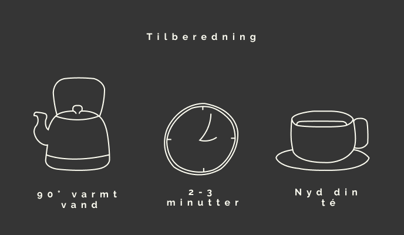

Kvalitetsté
Ikke alene er Medova håndplukket og lavet på de fineste topskud.
Der anvendes kun planter fra de bedste tédistrikter i verden.
Læs mere
100% sort té
Bliv klogere på, hvad der gør Medova til Medova!
Ikke alene er Medova håndplukket og lavet på de fineste topskud.
Der anvendes kun planter fra de bedste tédistrikter i verden.
At lave en god kop Medova té er ganske simpelt og tager næsten ingen tid.
